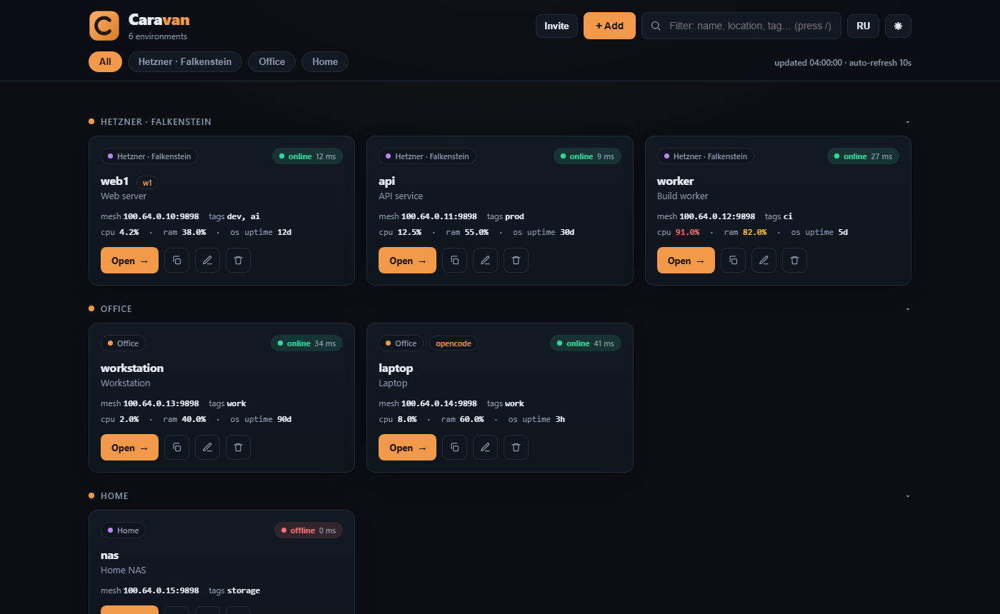
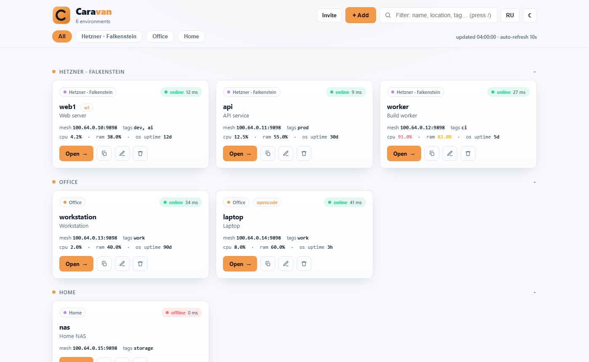
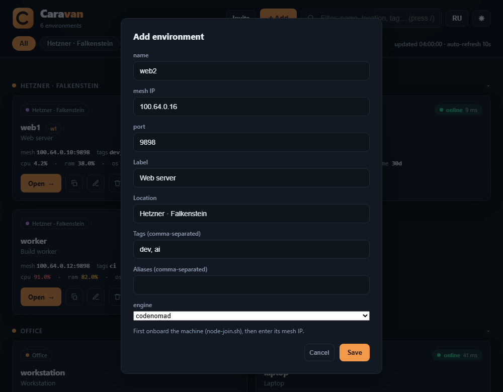

Caravan gives you one private, SSO-protected window to run AI coding agents (OpenCode / CodeNomad) across all your machines — installed with one command on a $3 VPS. Your code never leaves your infrastructure.
curl -fsSL https://raw.githubusercontent.com/leodev-2022/caravan/main/install.sh | sudo bash
⚠️ Early-stage (pre-1.0). Test on a fresh, throwaway machine — not on a server with critical data. Back up first.

A cockpit, not a terminal. Caravan handles the boring, dangerous parts so you can just code.
One window to every dev box — home, office, VPS. Switch between them instantly, from anywhere.
Default-deny firewall, SSO + TOTP, mesh-only nodes, root-only secrets. Hardening is built in, not a checklist.
Runs on a ~$3 VPS (1 vCPU / 2 GB). No SaaS, no telemetry — your code stays on your infra.
Idempotent install.sh for the hub and node-join.sh (Linux) / node-join.ps1 (Windows) for machines. Update and diagnose with the caravan CLI.
Nodes dial out to the hub over a self-hosted WireGuard mesh — no inbound ports on your machines, nothing exposed.
Caddy (TLS/ACME), Authelia (SSO+TOTP), headscale (mesh), and the portal.
Nodes join with short-lived keys. Traffic is WireGuard; DERP is only a relay fallback.
CodeNomad on the mesh (HTTP, not public), optionally with local speech-to-text.
A clean, fast dashboard — dark & light.


Bring your own server. One command each.
curl -fsSL .../caravan/main/install.sh | sudo bash
curl -fsSL .../node-join.sh | sudo bash -s -- \
--hub https://mesh.example.com --token <key>
# Windows (PowerShell, as Administrator):
.\node-join.ps1 -Hub https://mesh.example.com -Token <key>sudo caravan add-node \ --name web1 --ip <mesh-ip>
Short answers. More in the docs.
No. Use --sslip (a working name from your IP) or --self-signed for testing. A domain is best for production.
No. Nodes dial out to the hub over a WireGuard mesh — nothing to expose.
No. Everything runs on your own infrastructure. Caravan has no telemetry.
Yes. The hub runs on Linux (Ubuntu/Debian), but nodes can be Linux or Windows 10/11 — use node-join.ps1 in PowerShell (as Administrator) on Windows.
Yes — MIT. A managed cloud and team features are planned (open-core).
No. Caravan consumes them as dependencies and credits them. Not affiliated with NeuralNomadsAI or the OpenCode team.